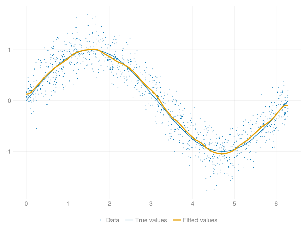
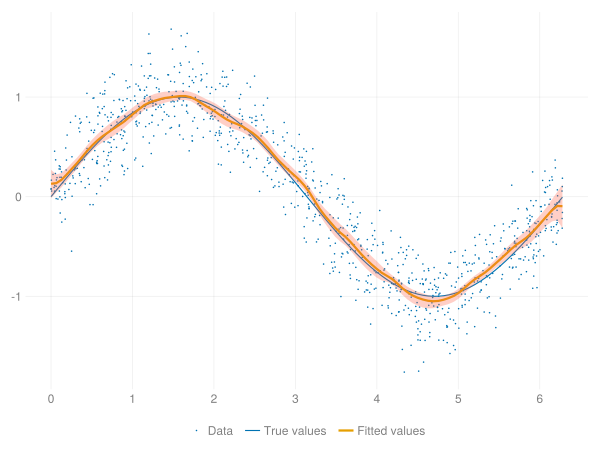

LocalPoly.jl
LocalPoly.jl is a Julia implementation of the local polynomial regression methods outlined in Fan and Gijbels (1996). This package is still experimental, and the API is subject to change.
Local Polynomial Regression
Local polynomial regression is a non-parametric estimation technique that can be used to estimate both the conditional mean function and its derivatives.
Let $(X_i, Y_i)_{i=1}^N$ be observations (for sake of exposition assumed identically and independently distributed) of the random variables $(X,Y)$. Let $m(x)$ be the conditional mean function:
\[m(x) = E[Y|X=x]\]
The conditional mean function $m(x)$ can be approximated in a neighborhood of any point $x_0$ by a Taylor expansion of degree $p$:
\[m(x) \approx \sum_{j=0}^p \frac{m^{(p)}(x_0)}{j!}(x - x_0)^j\]
This suggests an estimator using the Taylor approximation with weighted data. Let $K(\cdot)$ be a valid kernel function, and $h$ the bandwidth or smoothing parameter. Denote $K_h(\cdot) = K(\cdot/h)/h$. The locally weighted sum of squared errors is:
\[\sum_{i=1}^N\left[ Y_i - \sum_{j=0}^p \beta_j \left(X_i - x_0\right)^j\right]^2 K_h(X_i - x_0)\]
Let $\widehat\beta \: (j=0,\ldots,p)$ be the $\beta$ minimizing the above expression. Then the $\nu$-th derivative of the conditional mean function evaluated at $x_0$ is:
\[\widehat m_\nu(x_0) = \nu! \widehat\beta_\nu\]
Matrix Notation
The local polynomial estimator can be conveniently expressed using matrix notation. Define the matrices:
\[\mathbf X = \left( \begin{matrix} 1 & (X_1 - x_0) & \cdots & (X_1 - x_0)^p \\ \vdots & \vdots & & \vdots \\ 1 & (X_N - x_0) & \cdots & (X_N - x_0)^p \end{matrix} \right)\]
\[\mathbf y = \left( \begin{matrix} Y_1 \\ \vdots \\ Y_N \end{matrix} \right)\]
\[\mathbf W = \text{diag} \left\{ K_h(X_i - x_0) \right\}\]
Then the weighted sum of squared errors is given by:
\[\left(\mathbf y - \mathbf X \beta \right)^\prime \mathbf W \left(\mathbf y - \mathbf X \beta \right)\]
The unique minimizer $\widehat\beta$ is then:
\[\widehat \beta = \left( \mathbf X^\prime \mathbf W \mathbf X \right)^{-1} \mathbf X^\prime \mathbf W \mathbf y\]
Examples
julia> using LocalPoly
julia> x = 2π * rand(1000);
julia> y = sin.(x) + randn(size(x))/4;
julia> v = range(0, 2π, length=100);
julia> β̂ = lpreg(x, y, v; nbins=100)
100-element Vector{SVector{2, Float64}}:
[-0.03070776997429395, 1.2231391275083123]
[0.048352477003287916, 1.1570071796231207]
⋮
[-0.04452583837750935, 0.7419062295509331]
[-0.04543586963674676, 0.28981667874915656]The first element of the coefficient vector represents the function estimate $\widehat m (v)$:
julia> ŷ = first.(β̂)
100-element Vector{Float64}:
-0.03070776997429395
0.048352477003287916
⋮
-0.04452583837750935
-0.04543586963674676Plotting the fitted function values against the data:
using CairoMakie
f = Figure()
ax = Axis(f[1, 1])
scatter!(ax, x, y; markersize=3, label="Data")
lines!(ax, v, sin.(v); color=:darkgreen, label="True values")
lines!(ax, v, ŷ; color=:tomato, linewidth=3, label="Fitted values")
Legend(f[2, 1], ax; orientation=:horizontal, framevisible=false)
current_figure()
Alternatively, a LPModel object can be constructed to first bin the data before running the regression with the lpreg! method:
julia> 𝐌 = LPModel(x, y, 1; nbins=100)
LPModel{Float64}
Degree: 1
Observations: 1000
Bins: 100
julia> β̃ = lpreg!(𝐌, v);
julia> ỹ = first.(β̃);
julia> ỹ == ŷ
trueStandard Errors
The conditional variance-covariance matrix can be computed along with the coefficient estimates at each evaluation point by using the keyword argument se=true.
julia> β̂, V̂ = lpreg(x, y, v; nbins=100, se=true);
julia> V̂[1]
2×2 SMatrix{2, 2, Float64, 4} with indices SOneTo(2)×SOneTo(2):
0.0338293 -0.207557
-0.207557 1.82918
julia> σ̂ = map(V -> sqrt(V[1, 1]), V̂)
100-element Vector{Float64}:
0.18392746694896067
0.12325024737108828
0.09069661552755462
0.0769932404992409
⋮
0.08852952186657372
0.11884976257937468
0.1795255766016528We can use this to add a confidence interval to the plot:
using Distributions
tᶜ = quantile(TDist(100-2), 1-0.05/2)
band!(ax, v, ŷ - tᶜ*σ̂, ŷ + tᶜ*σ̂; color=(:tomato, 0.3))
current_figure()
Performance
Set the number of observations $N=100, \! 000$ and $Y_i = \sin(X_i) + \varepsilon_i$ for $X_i \in [0, 2\pi]$. Evaluate the local polynomial estimator at $1, \! 000$ points.
julia> using BenchmarkTools, LocalPoly
julia> x = 2π * rand(100_000);
julia> y = sin.(x) + randn(size(x))/10;
julia> v = range(minimum(x), maximum(x), length=1000);
julia> @btime lpreg($x, $y, $v);
164.850 ms (6506550 allocations: 115.18 MiB)R
library(KernSmooth)
library(microbenchmark)
x <- 2*pi*runif(100000)
y <- sin(x) + rnorm(100000)/10
v <- seq(from = 0, to = 2*pi, length.out = 1000)
h <- dpill(x, y, gridsize = 1000, range.x = c(0, 2*pi))
microbenchmark("Local linear" = {locpoly(x, y, bandwidth = h, gridsize = 1000, range.x = c(0, 2*pi))})Output:
Unit: milliseconds
expr min lq mean median uq max neval
Local linear 2.150457 2.262588 2.61474 2.377186 2.598788 5.300715 100Stata
clear all
qui set obs 100000
gen x = 2*3.14159265*runiform()
gen y = sin(x) + rnormal()/10
forval i = 1/10 {
timer on `i'
lpoly y x, n(1000) kernel(epan2) degree(1) nograph
timer off `i'
}
timer listOutput (measured in seconds):
1: 14.59 / 1 = 14.5850
2: 14.45 / 1 = 14.4500
3: 14.07 / 1 = 14.0730
4: 14.31 / 1 = 14.3090
5: 14.44 / 1 = 14.4440
6: 14.31 / 1 = 14.3120
7: 14.06 / 1 = 14.0630
8: 14.22 / 1 = 14.2160
9: 14.33 / 1 = 14.3280
10: 15.00 / 1 = 14.9980MATLAB
x = rand(100000, 1);
y = sin(x) + randn(100000, 1)/10;
v = linspace(min(x), max(x), 1000);
h = 0.087; % approximate plugin bandwidth
T = 100; % number of benchmark trials to run
tocs = zeros(T, 1);
for i = 1:numel(tocs)
tic; lpreg(x, y, v, h); tocs(i) = toc;
end
fprintf('mean = %4.3f s\n std = %4.3f s\n', mean(tocs), std(tocs));
function betas = lpreg(x, y, v, h)
X = [ones(size(x)) x];
betas = v;
for i = 1:numel(v)
d = x - v(i);
X(:, 2) = d;
w = kernelfunc(d/h)/h;
beta = inv(X' * (w .* X))*(X' * (w .* y));
betas(i) = beta(1);
end
function z = kernelfunc(u)
I = abs(u) <= 1;
z = zeros(size(u));
z(I) = 3*(1-u(I).^2)/4;
end
endOutput:
mean = 2.739 s
std = 0.130 s